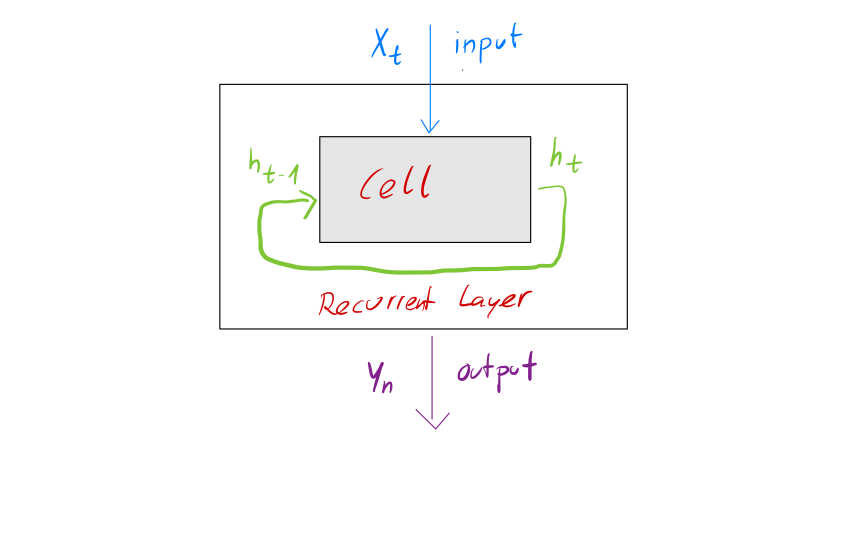
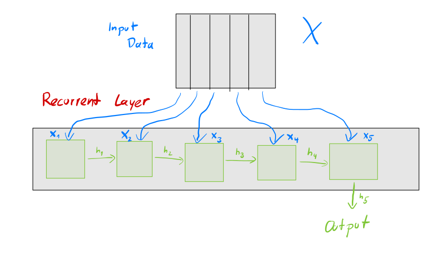

RNNs¶
Before we start taking a look at the inner mechanics of recurrent neural networks (RNNs) we will take a look at our data and see where apporaches like CNN or Autoencoders lag and why we therefore introduce yet another type.
Motivation¶
It is worth comparing the entities of digital data. For this example we want to compare text and image data.
Image |
Text |
Note |
|---|---|---|
Continous values: Colors expressed via RGB are continous, we can morph from green to blue |
The meaning of car and bicycle are not continous but discrete |
This is important for our loss function which helps our neural net to move into the proper direction via gradients. |
Two dimensional data (plus color) - we can often mirror the image w/o loosing semantics |
Single dimension in time - the sequence of words is really important |
The temporal dependency of text is vastly important - this can also lead way back into the past, e.g. the name of a protagonist of a story |
A single pixel rarely changes the whole semantics of a picture |
Changing a single word (e.g. negation) can vastly change the meaning of a sentence |
Our neural network needs to be robust and needs to avoid producing noise |
The structure of the data is given by the contrast of an image |
The structure of a sentence is also given by its grammar which often relies on abstract notions such as past and future |
|
A digital image has a fixed image size |
The length of a text or sentence is not fixed and depends on its content |
Although both kind of data are represented by bytes their formal structure differ a lot and therefore we need a new way to tackle data that has not a fixed size, like a text or a musical composition.
Representing semeantics of text is a very tedious and complex task in computer science whose research is called natural language processing (NLP). Neural networks also accelerated the progression in this domain and are used for translation of languages or sentiment analysis (is the text written in a positive or negative tone).
To tackle this stream of text data we will use recurrent neural networks (RNNs) which have a feedback loop inside itself which allows for recursive calls on data and hencefore for a variable length of input and output.

We often also illustrtate the layers in a more verbose, unrolled way. In this example our input data \(X\) is arranged in such a way that for each 5 samples in a row and the RNN will output a single sample. Think of this as we show the RNN 5 words and want to know which one should be the next one.

There are different architectures of how this feedback loop is achived, one of the most used ones is Long short-term memory (LSTM) which we will also use in this notebook.
As training data we will use Der Proceß by Franz Kafka which is available in txt format at wikisource.
Pre-processing¶
As always we need to talk about the pre-processing of our data. We want to train the RNN to write some Kafka-like texts but neural networks rely on mathematical notations and deviations which do not work on texts directly. Therefore we need to make a transition of words to numbers and there are 2 trivial approaches for this:
Word tokenization: Each word is assigned a token (number) is henceforth representated by this token
Character tokenization: Same as word tokenization but instead of words it uses chars
This allows us to transform the text into a line of numbers (vector) on which we can work on as before.
Both ways have advantages and disadvantages and we will try out both ways, although Der Proceß is not a really long book which may be not enough for Also is there a problem that german language conjugates words and makes it more difficult for the neural network to train on these as the token is different or we have to add a lot of work beforehand so our tokenization works well.
import re
import numpy as np
import pandas as pd
import tensorflow as tf
from tensorflow import keras
from tensorflow.keras.preprocessing.text import Tokenizer
from tensorflow.keras.utils import to_categorical
Lets start by taking a look at the text file if e.g. the encoding is properly.
text_file_path = "./Der_Prozess.txt"
with open(text_file_path, 'r') as f:
text = f.read()
print(text[0:1000])
Der Prozess
Franz Kafka
Die Schmiede, Berlin, 1925
Exportiert aus Wikisource am 29. November 2021
[I] FRANZ KAFKA
* * *
Der Prozess
ROMAN
VERLAG DIE SCHMIEDE
BERLIN
1925
[II] EINBANDENTWURF GEORG SALTER · BERLIN
COPYRIGHT 1925 BY VERLAG DIE SCHMIEDE · BERLIN
Inhalt
Erstes Kapitel
Zweites Kapitel
Drittes Kapitel
Viertes Kapitel
Fünftes Kapitel
Sechstes Kapitel
Siebentes Kapitel
Achtes Kapitel
Neuntes Kapitel
Zehntes Kapitel
Sekundärliteratur
Kurt Tucholsky: Der Prozeß. In. Die Weltbühne. Jahrgang 22, Nummer 10, Seite 383–386
[1] ERSTES KAPITEL
VERHAFTUNG · GESPRÄCH MIT FRAU GRUBACH · DANN FRÄULEIN BÜRSTNER
Jemand mußte Josef K. verleumdet haben, denn ohne daß er etwas Böses getan hätte, wurde er eines Morgens verhaftet. Die Köchin der Frau Grubach, seiner Zimmervermieterin, die ihm jeden Tag gegen acht Uhr früh das Frühstück brachte, kam diesmal nicht. Das war noch niemals geschehen. K. wartete noch ein Weilchen,
We will not get into too much of pre-processing here but will mention regular expressions are a really great tool to verify or sanitize textstructures.
We only want to perform a small analysis on the text what the most used words are - to split these properly we will use regular expressions as well.
print("20 most used words in Proceß")
pd.Series(re.sub(r"s{2,}", " ", text).replace("\n", " ").replace("\t", " ").split(" ")).value_counts().head(20)
20 most used words in Proceß
der 1685
und 1606
die 1557
er 1393
zu 1052
nicht 980
den 853
K. 850
sich 839
es 797
in 756
das 650
sagte 643
ich 640
sie 578
aber 575
Sie 564
daß 553
mit 544
dem 512
dtype: int64
# text = text.lower()
text = text.replace('\n', ' ')
text = re.sub(' +', '. ', text).strip()
text = text.replace('..', '.')
text = re.sub('([!"#$%&()*+,-./:;<=>?@[\]^_`{|}~])', r' \1 ', text)
text = re.sub('\s{2,}', ' ', text)
Create tokens¶
For now we will start with the char level approach.
char_tokenizer = Tokenizer(lower=False, filters='', char_level=True)
char_tokenizer.fit_on_texts([text])
num_chars = len(char_tokenizer.word_index)+1
print(f"Number of found chars: {num_chars}")
char_token_list = char_tokenizer.texts_to_sequences([text])[0]
Number of found chars: 92
len(char_token_list)
469649
We will now need to transform this list of tokens into two vectors \(X, y\) where \(X\) is a series of \(n\) tokens and \(y\) is the vector with the perceeding tokens for these \(n\) tokens.
from typing import List
def generate_sequences(token_list: List[int], step: int, seq_length: int, num_classes: int):
X = []
y = []
for i in range(0, len(token_list) - seq_length, step):
X.append(token_list[i:i+seq_length])
y.append(token_list[i+seq_length])
y = to_categorical(y, num_classes=num_classes, dtype=np.int16)
return np.array(X, dtype=np.int16), np.array(y, dtype=np.int16)
X, y = generate_sequences(char_token_list, step=1, seq_length=100, num_classes=num_chars)
print("X: ", X.shape, "\ty: ", y.shape)
X: (469549, 100) y: (469549, 92)
Note that \(y\) does not output just a single number but the number of tokens that are available which is called one hot encoding. This has the advantage that we get the probability of each token instead of just the next token so it allows us to not always take the most probable next token but to deviate from it.
We can take a look at the first sample from \(X\) and \(y\).
X[0, :]
array([38, 2, 5, 1, 48, 5, 17, 22, 2, 7, 7, 1, 21, 1, 40, 5, 8,
3, 22, 1, 29, 8, 20, 23, 8, 1, 21, 1, 38, 4, 2, 1, 28, 11,
9, 15, 4, 2, 10, 2, 1, 16, 1, 36, 2, 5, 13, 4, 3, 1, 16,
1, 57, 64, 59, 65, 1, 21, 1, 34, 74, 33, 17, 5, 6, 4, 2, 5,
6, 1, 8, 12, 7, 1, 39, 4, 23, 4, 7, 17, 12, 5, 11, 2, 1,
8, 15, 1, 59, 64, 1, 21, 1, 55, 17, 25, 2, 15, 18, 2])
y[0, :]
array([0., 0., 0., 0., 0., 1., 0., 0., 0., 0., 0., 0., 0., 0., 0., 0., 0.,
0., 0., 0., 0., 0., 0., 0., 0., 0., 0., 0., 0., 0., 0., 0., 0., 0.,
0., 0., 0., 0., 0., 0., 0., 0., 0., 0., 0., 0., 0., 0., 0., 0., 0.,
0., 0., 0., 0., 0., 0., 0., 0., 0., 0., 0., 0., 0., 0., 0., 0., 0.,
0., 0., 0., 0., 0., 0., 0., 0., 0., 0., 0., 0., 0., 0., 0., 0., 0.,
0., 0., 0., 0., 0., 0., 0.], dtype=float32)
Building the LSTM network¶
Now we can start building the network. Before we feed the tokens into the LSTM cell we will use an embedding. This allows the network to self-interpret the meaning of each token in its own learnable space.
from keras import layers
from keras.models import Model
from keras.optimizer_v2.rmsprop import RMSprop
n_units = 256
embedding_size = 100
text_in = layers.Input(shape=(None,))
x = layers.Embedding(num_chars, embedding_size,)(text_in)
x = layers.LSTM(n_units)(x)
# x = layers.Dropout(0.2)(x)
text_out = layers.Dense(num_chars, activation='softmax')(x)
char_model = Model(text_in, text_out, name="char_rnn")
char_model.compile(
# note that we use the same loss as with MNIST
# which is used when we want to learn a
# probability distribution
loss=keras.losses.CategoricalCrossentropy(),
optimizer=RMSprop(learning_rate=0.001)
)
char_model.summary()
Model: "char_rnn"
_________________________________________________________________
Layer (type) Output Shape Param #
=================================================================
input_2 (InputLayer) [(None, None)] 0
_________________________________________________________________
embedding_1 (Embedding) (None, None, 100) 9200
_________________________________________________________________
lstm_1 (LSTM) (None, 256) 365568
_________________________________________________________________
dense_1 (Dense) (None, 92) 23644
=================================================================
Total params: 398,412
Trainable params: 398,412
Non-trainable params: 0
_________________________________________________________________
char_model.fit(X, y, epochs=15, batch_size=128, shuffle=True)
Epoch 1/15
3669/3669 [==============================] - 65s 17ms/step - loss: 1.7804
Epoch 2/15
3669/3669 [==============================] - 64s 18ms/step - loss: 1.3451
Epoch 3/15
3669/3669 [==============================] - 66s 18ms/step - loss: 1.2244
Epoch 4/15
3669/3669 [==============================] - 67s 18ms/step - loss: 1.1601
Epoch 5/15
3669/3669 [==============================] - 68s 18ms/step - loss: 1.1179
Epoch 6/15
3669/3669 [==============================] - 68s 19ms/step - loss: 1.0868
Epoch 7/15
3669/3669 [==============================] - 68s 19ms/step - loss: 1.0620
Epoch 8/15
3669/3669 [==============================] - 68s 19ms/step - loss: 1.0407
Epoch 9/15
3669/3669 [==============================] - 68s 19ms/step - loss: 1.0231
Epoch 10/15
3669/3669 [==============================] - 68s 19ms/step - loss: 1.0078
Epoch 11/15
3669/3669 [==============================] - 69s 19ms/step - loss: 0.9941
Epoch 12/15
3669/3669 [==============================] - 69s 19ms/step - loss: 0.9818
Epoch 13/15
3669/3669 [==============================] - 69s 19ms/step - loss: 0.9703
Epoch 14/15
3669/3669 [==============================] - 68s 19ms/step - loss: 0.9602
Epoch 15/15
3669/3669 [==============================] - 68s 19ms/step - loss: 0.9501
<keras.callbacks.History at 0x7f88011bc410>
Now we can write a function which continues to write a text on a given input. We will use temperature to determine how much we will obey the probability distribution returned by the neural network. A low temperature will only allow the most likely candidates and a high temperature will also consider more unlikely candidates.
def sample_with_temp(preds, temp:float=1.0):
preds = np.asarray(preds).astype('float64')
preds = np.log(preds)/temp
exp_preds = np.exp(preds)
preds = exp_preds/np.sum(exp_preds)
probs = np.random.multinomial(1, preds, 1)
return np.argmax(probs)
def generate_text(seed_text: str, next_tokens: int, model: keras.Model, tokenizer: Tokenizer, max_sequence_len: int, temp: float, char_mode: bool = False):
output_text = seed_text
for _ in range(next_tokens):
token_list = tokenizer.texts_to_sequences([seed_text])[0]
token_list = token_list[-max_sequence_len:]
token_list = np.reshape(token_list, (1, max_sequence_len))
probs = model.predict(token_list, verbose=0)[0]
y_class = sample_with_temp(probs, temp)
output_token = tokenizer.index_word[y_class] if y_class > 0 else ''
if char_mode:
seed_text += output_token
output_text += output_token
else:
seed_text += output_token + " "
output_text += output_token + " "
return output_text
for temp in np.arange(0.1, 1.0, 0.1):
print(f"temp {temp}")
print(generate_text(
seed_text="K. fragte sich ",
next_tokens=120,
model=char_model,
max_sequence_len = 14,
tokenizer=char_tokenizer,
temp=temp,
char_mode=True,
))
print()
temp 0.1
K. fragte sich , „daß es mir nicht verstehn . Da sie sind , daß er das Gesetz , der ihm das Gesetzes , der sich an der Schreibweise fol
temp 0.2
K. fragte sich , „ich habe das Gesicht , die er sich nicht , daß er ein wenig bereitete . Der Mann kann , daß es sich daran , daß er da
temp 0.30000000000000004
K. fragte sich , während des Advokat , der schon den Kopf , denn es war nicht , daß er sich so genug , so sehr sich ganz gerade das Frä
temp 0.4
K. fragte sich , „ich habe dir die Schultern ausgeschlossen , daß es nicht mehr sehr gut , daß dieser Teller , der seinen Augen . „Was
temp 0.5
K. fragte sich selbst erwarten wird . Ich werde Ihnen . Gewiß , daß er sich in der getragendes Betwenden , so war es den Angeklagten ha
temp 0.6
K. fragte sich . „Auf den Willer . Da kommt er machte , als er es wieder vorhandene Gedanken geben , als sie geschehen . Da ich nicht s
temp 0.7000000000000001
K. fragte sich . „Es ist nicht unwichtig übern mit dem Kaufmann , als sie zum Kreis werden , es war ihm immer weiter . Glaubst dunkel ,
temp 0.8
K. fragte sich , daß er sogar noch darin offen , er brauchte vor allem zur Ersache , weil er sich nicht verstand , aber K . größer . Si
temp 0.9
K. fragte sich immer war . Zu damit den Zustand laut gekrämtlte . K . gerade zu bemerkte . K . bin die rüde , bei dieser leicht weiter
print(generate_text(
seed_text="Ich gab ihm einen Bissen Brot und ließ es ihn essen. Darüber ließe sich viel sagen.".lower(),
next_tokens=120,
model=char_model,
max_sequence_len=16,
tokenizer=char_tokenizer,
temp=0.2,
char_mode=True,
))
ich gab ihm einen bissen brot und ließ es ihn essen. darüber ließe sich viel sagen. [ hein nicht , daß er das Gesetzes , der sich an dem Fensterkanz schon verstand . Sie sind mir an , daß es nicht aufges
Model on word basis¶
word_tokenizer = Tokenizer(lower=True, char_level=False,)
word_tokenizer.fit_on_texts([text])
num_words = len(word_tokenizer.word_index)+1
print(f"Number of found words: {num_words}")
word_token_list = word_tokenizer.texts_to_sequences([text])[0]
Number of found words: 8675
X_word, y_word = generate_sequences(char_token_list, step=1, seq_length=20, num_classes=num_words)
print("X: ", X_word.shape, "\ty: ", y_word.shape)
X: (469629, 20) y: (469629, 8675)
from keras import layers
from keras.models import Model
from keras.optimizer_v2.rmsprop import RMSprop
n_units = 256
embedding_size = 100
text_in = layers.Input(shape=(None,))
x = layers.Embedding(num_words, embedding_size,)(text_in)
x = layers.LSTM(n_units)(x)
x = layers.Dropout(0.2)(x)
text_out = layers.Dense(num_words, activation='softmax')(x)
word_model = Model(text_in, text_out, name="word_rnn")
word_model.compile(
# note that we use the same loss as with MNIST
# which is used when we want to learn a
# probability distribution
loss=keras.losses.CategoricalCrossentropy(),
optimizer=RMSprop(learning_rate=0.001)
)
word_model.summary()
2021-12-06 19:40:14.798682: I tensorflow/stream_executor/cuda/cuda_gpu_executor.cc:937] successful NUMA node read from SysFS had negative value (-1), but there must be at least one NUMA node, so returning NUMA node zero
2021-12-06 19:40:14.890694: I tensorflow/stream_executor/cuda/cuda_gpu_executor.cc:937] successful NUMA node read from SysFS had negative value (-1), but there must be at least one NUMA node, so returning NUMA node zero
2021-12-06 19:40:14.891349: I tensorflow/stream_executor/cuda/cuda_gpu_executor.cc:937] successful NUMA node read from SysFS had negative value (-1), but there must be at least one NUMA node, so returning NUMA node zero
2021-12-06 19:40:14.892530: I tensorflow/core/platform/cpu_feature_guard.cc:142] This TensorFlow binary is optimized with oneAPI Deep Neural Network Library (oneDNN) to use the following CPU instructions in performance-critical operations: AVX2 FMA
To enable them in other operations, rebuild TensorFlow with the appropriate compiler flags.
2021-12-06 19:40:14.894232: I tensorflow/stream_executor/cuda/cuda_gpu_executor.cc:937] successful NUMA node read from SysFS had negative value (-1), but there must be at least one NUMA node, so returning NUMA node zero
2021-12-06 19:40:14.894846: I tensorflow/stream_executor/cuda/cuda_gpu_executor.cc:937] successful NUMA node read from SysFS had negative value (-1), but there must be at least one NUMA node, so returning NUMA node zero
2021-12-06 19:40:14.895380: I tensorflow/stream_executor/cuda/cuda_gpu_executor.cc:937] successful NUMA node read from SysFS had negative value (-1), but there must be at least one NUMA node, so returning NUMA node zero
2021-12-06 19:40:16.945934: I tensorflow/stream_executor/cuda/cuda_gpu_executor.cc:937] successful NUMA node read from SysFS had negative value (-1), but there must be at least one NUMA node, so returning NUMA node zero
2021-12-06 19:40:16.946560: I tensorflow/stream_executor/cuda/cuda_gpu_executor.cc:937] successful NUMA node read from SysFS had negative value (-1), but there must be at least one NUMA node, so returning NUMA node zero
2021-12-06 19:40:16.947114: I tensorflow/stream_executor/cuda/cuda_gpu_executor.cc:937] successful NUMA node read from SysFS had negative value (-1), but there must be at least one NUMA node, so returning NUMA node zero
2021-12-06 19:40:16.949266: I tensorflow/core/common_runtime/gpu/gpu_device.cc:1510] Created device /job:localhost/replica:0/task:0/device:GPU:0 with 13839 MB memory: -> device: 0, name: Tesla T4, pci bus id: 0000:00:04.0, compute capability: 7.5
Model: "word_rnn"
_________________________________________________________________
Layer (type) Output Shape Param #
=================================================================
input_1 (InputLayer) [(None, None)] 0
_________________________________________________________________
embedding (Embedding) (None, None, 100) 867500
_________________________________________________________________
lstm (LSTM) (None, 256) 365568
_________________________________________________________________
dropout (Dropout) (None, 256) 0
_________________________________________________________________
dense (Dense) (None, 8675) 2229475
=================================================================
Total params: 3,462,543
Trainable params: 3,462,543
Non-trainable params: 0
_________________________________________________________________
word_model.fit(X_word, y_word, epochs=15, batch_size=128, shuffle=True)
2021-12-06 19:40:47.221813: W tensorflow/core/framework/cpu_allocator_impl.cc:80] Allocation of 8148063150 exceeds 10% of free system memory.
2021-12-06 19:40:51.851749: W tensorflow/core/framework/cpu_allocator_impl.cc:80] Allocation of 8148063150 exceeds 10% of free system memory.
2021-12-06 19:40:54.571676: I tensorflow/compiler/mlir/mlir_graph_optimization_pass.cc:185] None of the MLIR Optimization Passes are enabled (registered 2)
Epoch 1/15
2021-12-06 19:40:56.889561: I tensorflow/stream_executor/cuda/cuda_dnn.cc:369] Loaded cuDNN version 8005
3669/3669 [==============================] - 33s 8ms/step - loss: 2.0207
Epoch 2/15
3669/3669 [==============================] - 28s 8ms/step - loss: 1.5336
Epoch 3/15
3669/3669 [==============================] - 29s 8ms/step - loss: 1.3965
Epoch 4/15
3669/3669 [==============================] - 29s 8ms/step - loss: 1.3252
Epoch 5/15
3669/3669 [==============================] - 29s 8ms/step - loss: 1.2803
Epoch 6/15
3669/3669 [==============================] - 29s 8ms/step - loss: 1.2490
Epoch 7/15
3669/3669 [==============================] - 29s 8ms/step - loss: 1.2247
Epoch 8/15
3669/3669 [==============================] - 29s 8ms/step - loss: 1.2038
Epoch 9/15
3669/3669 [==============================] - 29s 8ms/step - loss: 1.1880
Epoch 10/15
3669/3669 [==============================] - 29s 8ms/step - loss: 1.1734
Epoch 11/15
3669/3669 [==============================] - 29s 8ms/step - loss: 1.1612
Epoch 12/15
3669/3669 [==============================] - 29s 8ms/step - loss: 1.1523
Epoch 13/15
3669/3669 [==============================] - 29s 8ms/step - loss: 1.1433
Epoch 14/15
3669/3669 [==============================] - 29s 8ms/step - loss: 1.1360
Epoch 15/15
3669/3669 [==============================] - 29s 8ms/step - loss: 1.1301
<keras.callbacks.History at 0x7fbb810ff310>
for temp in np.arange(0.1, 1.0, 0.1):
print(f"temp {temp}")
print(generate_text(
seed_text="Nachdem K. aufgestanden war fragte er sich ",
next_tokens=20,
model=word_model,
max_sequence_len = 7,
tokenizer=word_tokenizer,
temp=temp,
))
print()
temp 0.1
/opt/conda/lib/python3.7/site-packages/ipykernel_launcher.py:3: RuntimeWarning: divide by zero encountered in log
This is separate from the ipykernel package so we can avoid doing imports until
Nachdem K. aufgestanden war fragte er sich zu der sagte der von der nicht k in sie und der es und “ der so den daß nicht
temp 0.2
Nachdem K. aufgestanden war fragte er sich zu der sagte der von der nicht k in sie und der es und “ der eine und es und
temp 0.30000000000000004
Nachdem K. aufgestanden war fragte er sich zu der sagte der von der nicht k in sie und der es und “ der eine und daß k
temp 0.4
Nachdem K. aufgestanden war fragte er sich zu der sagte der von der nicht k in sie und der sagte der es und “ der nicht er
temp 0.5
Nachdem K. aufgestanden war fragte er sich zu der sagte der von der nicht k in sie und der nicht sie und “ nicht sie und zu
temp 0.6
Nachdem K. aufgestanden war fragte er sich zu der sagte der die k zu das der und “ der nicht er sich zu der er zu “
temp 0.7000000000000001
Nachdem K. aufgestanden war fragte er sich zu und “ der war und “ und er sie er in und der an sie und ich ich den
temp 0.8
Nachdem K. aufgestanden war fragte er sich zu der zu und “ k die ist den nicht sie den daß “ und “ war und “ der
temp 0.9
Nachdem K. aufgestanden war fragte er sich ein der sagte der mit als zu “ und die der dem war und “ ich und nicht sich zu